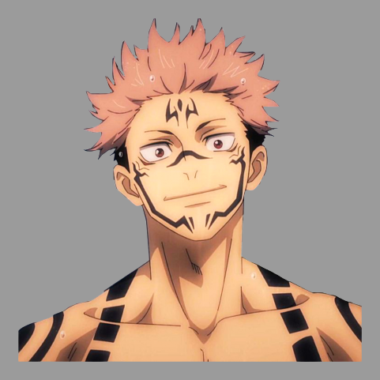

<ion-header [translucent]="true">
  <ion-toolbar color="dev-opts">
    <ion-buttons>
      <ion-menu-button></ion-menu-button>
    </ion-buttons>
    <h2 slot="end" *ngIf="user">{{user.username}}</h2>
    <ion-avatar color="dev-opts" slot="end">
      
      
    </ion-avatar>
  </ion-toolbar>

  <ion-toolbar color="dev-opts">
    <ion-searchbar showCancelButton="focus" class="custom" color="medium" placeholder="Buscar" (ionInput)="searchUser($event)"></ion-searchbar>
  </ion-toolbar>
</ion-header>

<ion-content [fullscreen]="true">
  <ion-list>
    <ion-item class="user" *ngFor="let item of searchResult" (click)="getChat(item.userId)">
      <ion-avatar slot="start">
        
        
      </ion-avatar>
      <ion-avatar slot="end">
        <ion-icon class="size" name="search"></ion-icon>
      </ion-avatar>
      <ion-label>
        <h2>{{item.username}}</h2>
      </ion-label>
    </ion-item>
  </ion-list>
</ion-content>
